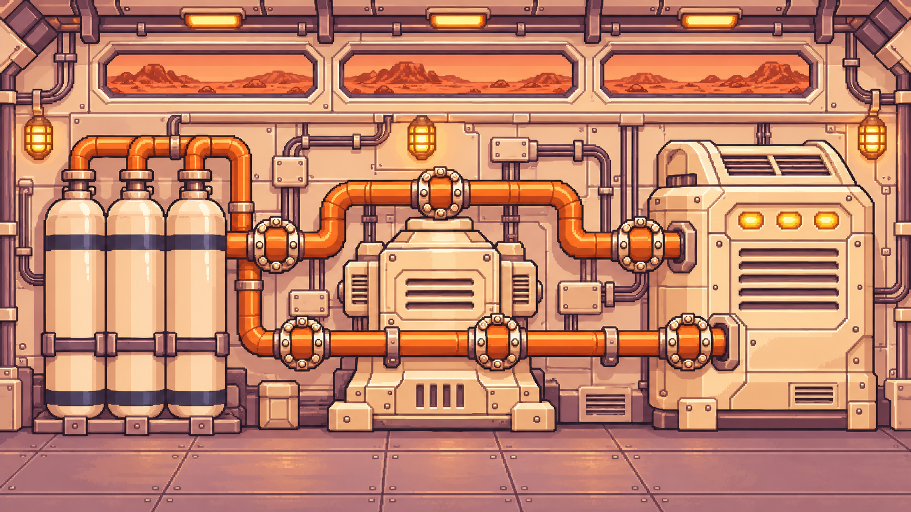

Oxygen Rescue
Find the leak in the air pipes.
CABIN AIRLOW
Cabin air is leaking.

MISSION COMPLETE
A breath of fresh air!
The leak is sealed. Your crew is ready for the next adventure.
← Back to TasksFind the leak in the air pipes.
Cabin air is leaking.

MISSION COMPLETE
The leak is sealed. Your crew is ready for the next adventure.
← Back to Tasks